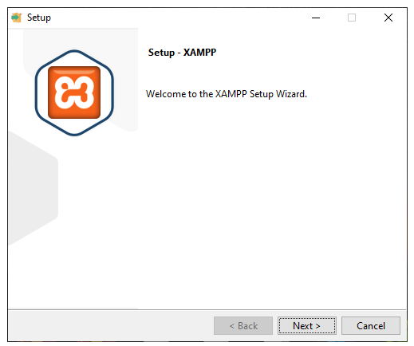
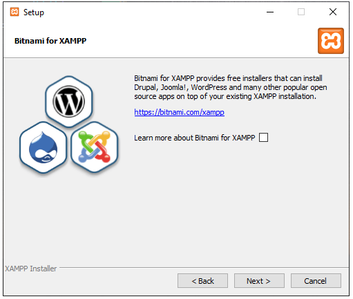
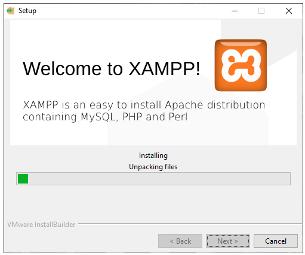
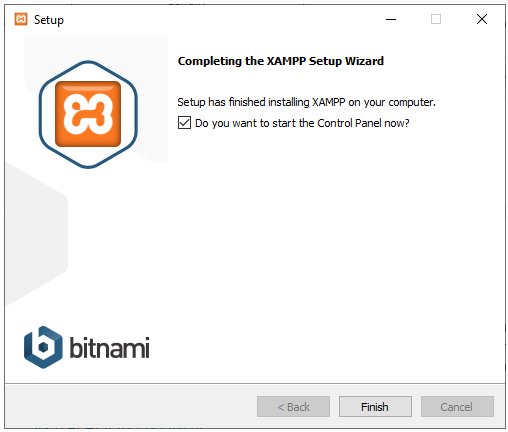
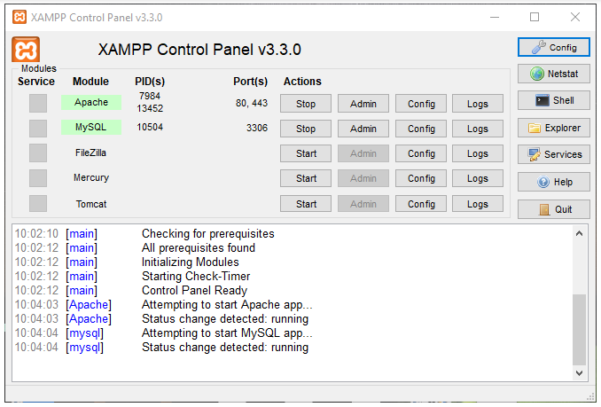
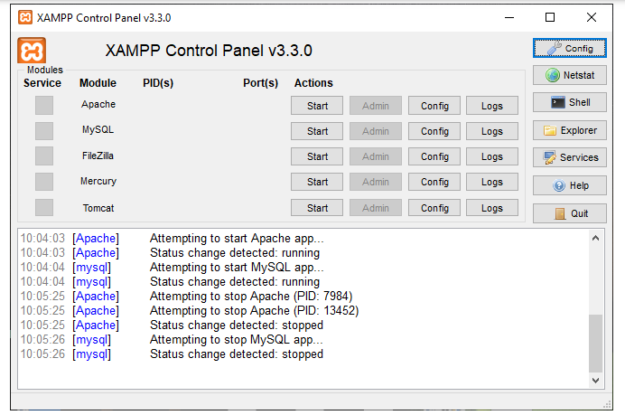

Un servidor XAMPP se puede instalar rápido y fácilmente como sistema de test local bajo Linux, Windows con un único archivo ejecutable. El paquete del software contiene los mismos componentes que se utilizan en cualquier servidor web, de forma que permite a los desarrolladores testar proyectos localmente y transferirlos cómodamente a sistemas reales.
Antes de instalar XAMPP, por supuesto será necesario la descarga de este paquete. Para ello nos vamos a dirigir a su página web y elegir la descarga del sistema operativo que tengamos. Para esto vamos a utilizar Windows 10, seleccionamos la opción XAMPP para Windows
Una vez descargado el paquete, puedes ejecutar el archivo .exe haciendo doble clic en él, se va abrir un asistente de instalación.
Los componentes mínimos que te instala XAMPP son el servidor Apache y el lenguaje PHP, pero XAMPP también instala otros elementos. En la pantalla de selección de componentes puede elegir la instalación o no de estos componentes, vas se necesita al menos instalar MySQL y phpMyAdmin.

En la siguiente pantalla puede elegir la carpeta de instalación de XAMPP. La carpeta de instalación predeterminada es C:\xampp. Si quiere cambiarla, haga clic en el icono de carpeta y seleccione la carpeta donde quiere instalar XAMPP. Para continuar la configuración de la instalación, haga clic en el botón «Next».

La siguiente pantalla ofrece información sobre los instaladores de aplicaciones para XAMPP creados por Bitnami. Haga clic en el botón «Next» para continuar. Si deja marcada la casilla, se abrirá una página web de Bitnami en el navegador.
Una vez elegidas las opciones de instalación en las pantallas anteriores, Haga clic en el botón «Next» para comenzar la instalación en el disco duro, El proceso de copia de archivos puede durar unos minutos.
Durante la instalación, si en el ordenador no se había instalado Apache anteriormente, en algún momento se mostrará un aviso del cortafuegos de Windows para autorizar a Apache a comunicarse en las redes privadas o públicas. Una vez elegidas las opciones deseadas (en estos apuntes se recomienda permitir las redes privadas y denegar las redes públicas), haga clic en el botón «Permitir acceso».

Puede que en algunos casos no te aparezca esta opción y ya se habilite automáticamente el servicio de Apache
Una vez terminada la copia de archivos, la pantalla final confirma que XAMPP ha sido instalado. Si se deja marcada la casilla, se abrirá el panel de control de XAMPP. Para cerrar el programa de instalación, haga clic en el botón «Finish».
Al panel de control de XAMPP se puede acceder mediante el menú de inicio «Todos los programas > XAMPP > XAMPP Control Panel» o, si ya está iniciado, mediante el icono del área de notificación.

El panel de control de XAMPP se divide en tres zonas:
En las utilidades se puede encontrar las siguientes opciones:

La parte de módulos es donde se encuentran todos los servicios que te ofrece XAMPP, como Apache, MySQL, FileZilla, etc.
Para poner en funcionamiento Apache (u otro modulo), hay que hacer clic en el botón «Start» correspondiente. Si el arranque del módulo tiene éxito, el panel de control mostrará el nombre del módulo con fondo verde, su identificador de proceso, los puertos abiertos (http y https), el botón «Start» se convertirá en un botón «Stop» y en la zona de notificación se verá el resultado de las operaciones realizadas.
Para detener Apache (u otro modulo), hay que hacer clic en el botón «Stop» correspondiente al módulo. Si la parada de Apache tiene éxito, el panel de control mostrará el nombre del módulo con fondo gris, sin identificador de proceso ni puertos abiertos (http y https), el botón «Stop» se convertirá en un botón «Start» y en la zona de notificación se verá el resultado de las operaciones realizadas.
